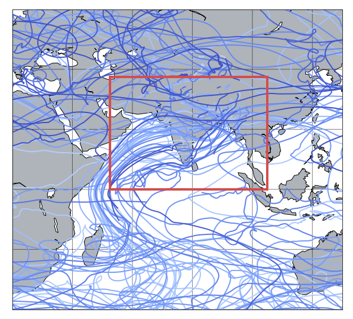
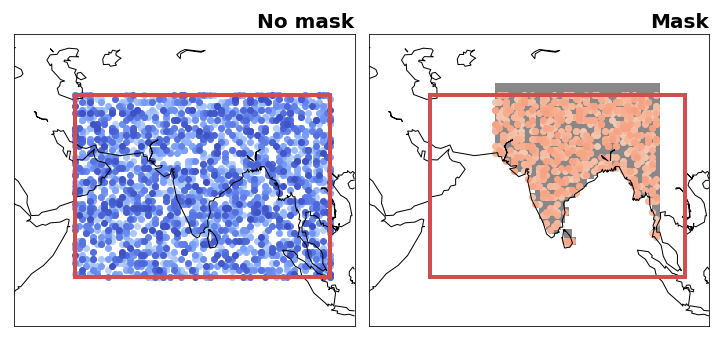
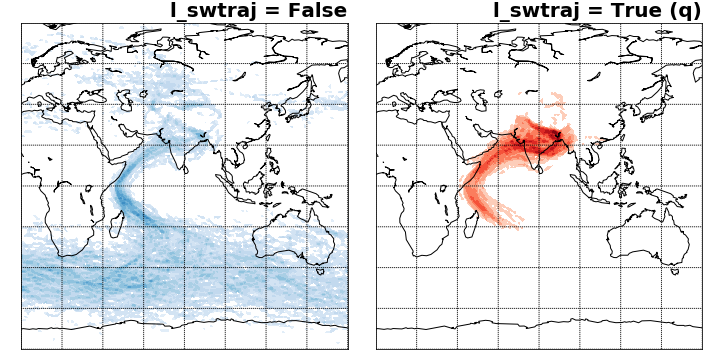

The IFS data is stored on a Arakawa’s A-grid while TRACMASS is defined on a Arakawa’s C-grid. Therefore, both zonal and meridional fluxes are computed interpolating the velocity fields on the TRACMASS grid. This is done on the read_field subroutine. The default setup of this project initialises trajectories in an area that covers south Asia. The seeding takes place every six hours during a month.

TRACMASS features: seeding trajectories using a mask (maskFile)
The seeding can be restricted using a mask file. The maskFile is only read if seedType=1, The seeding domain is described by the red rectangle in both figures below. If no mask is applied all grid points in the defined area can initialise a trajectory. The blue dots represent grid cells where trajectories are seeded. The figure on the right shows if a mask is applied to the seeding. The mask is given by the gray filled contour and the seeded trajectories are given in orange. As expected only trajectories that are within the mask and the seeding domain are initialised (note that the mask in this case is also defined outside the seeding domain).

TRACMASS features: flux & tracer trajectories (l_swtraj)
TRACMASS allows to compute a special case of trajectories that combine tracers and mass/volume fluxes. This option is useful to follow water trajectories in the atmosphere, or salt in the ocean. If l_swtraj TRUE, the mass/volume fluxes are multiplied by the tracer chosen in the first position. The figure below shows trajectory densities computed using the default setup of the project and a seeding mask. The figure on the left shows the trajectory density for the default case (air trajectories) while the figure on the right shows trajectories computed by multiplying the fluxes by humidity (water trajectories).
